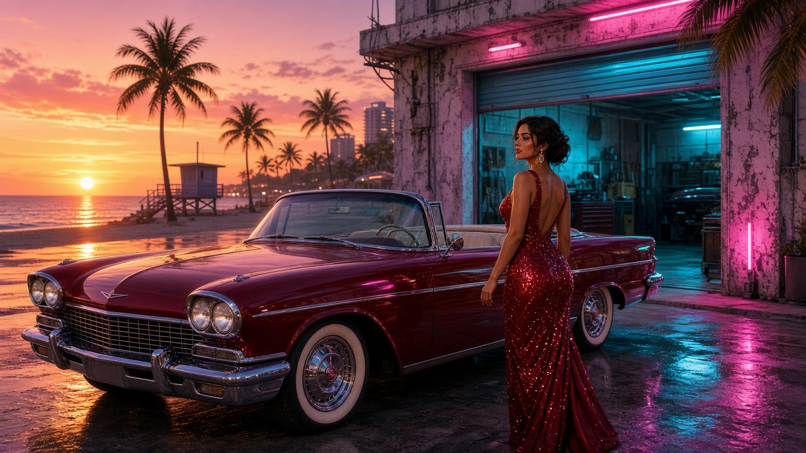

GTA 6 add-ons
Can You Still Get GTA 6 Vintage Vice City Pack? | Peekhole

Short answer: yes. The Vintage Vice City Pack, once a free pre-order bonus, is now sold on its own for $4.99 in the US (£4.49 in the UK) on PS5 and Xbox Series X|S. You need GTA 6 to use it.
What's in the pack?
- A '55 Vapid Stanier, a classic sedan.
- The Shore Court garage near Ocean Beach, with a weapon locker and a place to stash stolen goods before you fence them.
- Retro outfits and hairstyles: a pastel linen suit for Jason, and a red sequin mini dress with curls for Lucia.
- A tropical weapon pattern inspired by Tommy Vercetti's palm tree shirt.
The store listings say items unlock as Jason and Lucia's story moves along, so don't panic if it's not all there on day one.
Do I already own it?
Maybe. Digital purchases made before November 20, and physical pre-orders, got it free. Reports citing Rockstar Support say bonuses are claimed from the Store tab in the pause menu. Check there before you pay twice.
Does it include free GTA+?
No. The free month of GTA+ was only for early digital buyers and isn't part of the $4.99 pack.
Did Rockstar announce this?
Not on its Newswire. Dataminer Tex2 spotted the listings, and several outlets confirmed them on the PlayStation and Xbox stores on November 22. Prices vary by region.
Sources
- GTA6News: Vintage Vice City Pack price and how to buy it
- KeenGamer: Vintage Vice City Pack now sold separately
- Rockstar Report: Vintage Vice City Pack is now a $4.99 add-on
- GTA6Times: Vintage Vice City Pack now sells for $4.99
Peekhole take: A beach garage, a vintage ride, and Lucia in red sequins. Vice City knows exactly how to make a comeback.